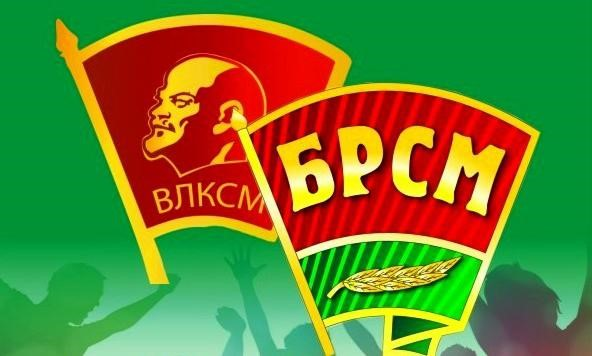

День рождения Комсомола

24 сентября является Днем образования комсомола Беларуси, преемником которого считается Белорусский республиканский союз молодежи (БРСМ). В этот день в 1920 году начал свою работу Первый Всебелорусский съезд комсомола. Первые союзы рабочей молодежи на территории Беларуси возникли летом 1917 года в Минске и Витебске. Представители из Беларуси присутствовали на I Всероссийском съезде союзов рабочей и крестьянской молодежи (29 октября — 4 ноября 1918 года), на котором был образован Российский коммунистический союз молодежи (PKСM). В каждом учреждении, предприятии и силовых ведомствах обязательно была первичная организация комсомола. Стать ее членом мог любой желающий гражданин страны от 14 до 28 лет. Но на деле вступить в комсомол было не так-то просто. Принимали тех, кто хорошо учился, был активным. Вступить в ряды комсомола – это была большая честь.
Правопреемником Ленинского коммунистического союза молодежи Беларуси сегодня является общественная организация «Белорусский республиканский союз молодежи» (БРСМ), созданная 6 сентября 2002 года путем слияния двух молодежных объединений — Белорусского патриотического союза молодежи (БПСМ) и Белорусского союза молодежи (БСМ).
Белорусский республиканский союз молодежи сохранил все лучшее из наследия советского комсомола, приняв от него эстафету. БРСМ объединяет молодежь, создает условия для ее реализации в самых разных сферах деятельности. В основе молодежного движения – патриотизм, трудолюбие, преемственность поколений. Лучшие традиции педагогических и волонтёрских отрядов, агитбригад, студенческих фестивалей, трудовых и благотворительных акций продолжает молодежь Беларуси.